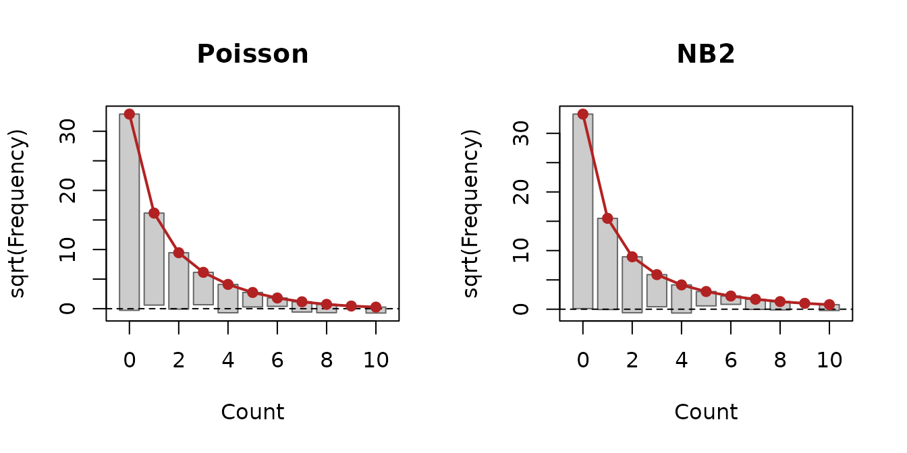
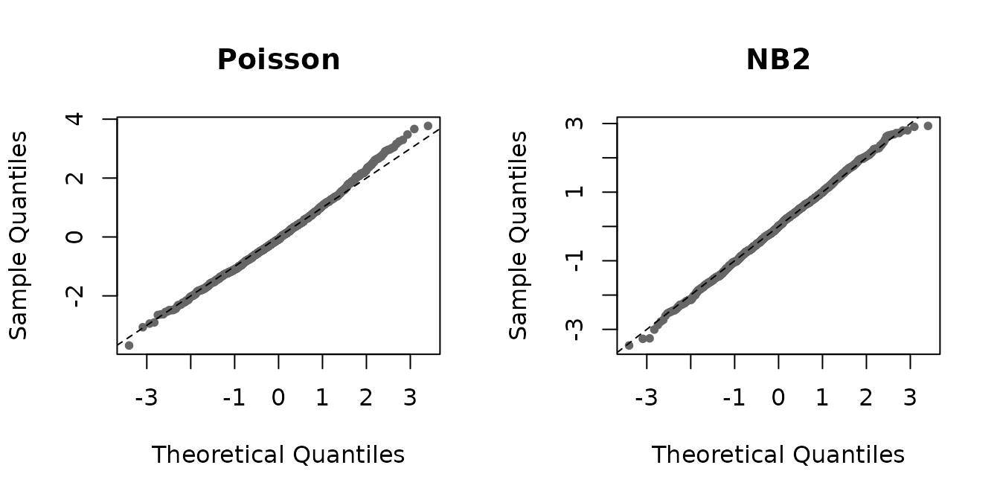

Choosing a count distribution
choosing-a-count-distribution.RmdflexCountReg fits the same regression model with many count distributions. This vignette shows a workflow for choosing among them: fit candidate families, compare their fit statistics, and check how well each one reproduces the observed counts.
library(flexCountReg)
data("washington_roads")The washington_roads data contain crashes on 507 road
segments observed over three years. We model total crashes as a function
of traffic volume (lnaadt) and the speed-limit indicator
speed50, with segment length as an exposure offset.
Fitting candidate families
countreg() takes the distribution as
family. Gradient-based optimizers
(method = "BFGS" or "NR") are usually the
fastest choice for the closed-form families.
Comparing fit statistics
glance() gives one row of fit statistics per model, so
the candidates can be compared side by side.
do.call(rbind, lapply(names(models), function(nm) {
cbind(model = nm, glance(models[[nm]])[, c("logLik", "AIC", "BIC", "df")])
}))
#> model logLik AIC BIC df
#> 1 Poisson -1110.057 2226.114 2242.056 3
#> 2 NB1 -1097.226 2202.451 2223.707 4
#> 3 NB2 -1090.559 2189.118 2210.374 4
#> 4 PIG1 -1096.941 2201.882 2223.138 4
#> 5 GP1 -1097.124 2202.247 2223.503 4The Poisson model fits far worse than the overdispersed families. For
a single model, summary() reports a likelihood-ratio test
against the Poisson model with the same mean specification:
summary(models$NB2)
#> Call:
#> countreg(formula = f, data = washington_roads, family = family,
#> offset = "lnlength", method = "BFGS")
#>
#> Model: countreg | family: NB2 | optimizer: BFGS
#> Iterations: 30
#> Convergence: successful convergence
#>
#> Coefficients (standard errors: Hessian-based):
#> Estimate Std. Error z value Pr(>|z|)
#> (Intercept) -8.8953 0.4465 -19.92 < 2e-16 ***
#> lnaadt 1.1244 0.0514 21.87 < 2e-16 ***
#> speed50 -0.5677 0.1102 -5.15 2.6e-07 ***
#> ln(alpha) -0.9123 0.2278 -4.00 6.2e-05 ***
#> ---
#> Signif. codes: 0 '***' 0.001 '**' 0.01 '*' 0.05 '.' 0.1 ' ' 1
#> Offset: lnlength (coefficient fixed at 1)
#>
#> Log-likelihood: -1090.559 | AIC: 2189.118 | BIC: 2210.374
#> N: 1501
#> LR test vs Poisson: chi-sq = 38.996 on 1 df, p-value = 2.12e-10 (boundary-corrected)regCompTest() compares two fitted models directly,
treating the one with fewer parameters as the restricted model:
regCompTest(models$Poisson, model2 = models$NB2)$statistics
#> # A tibble: 8 × 3
#> Statistic Model BaseModel
#> <chr> <dbl> <dbl>
#> 1 Log-likelihood -1091. -1110.
#> 2 Number of parameters 4 3
#> 3 AIC 2189. 2226.
#> 4 BIC 2210. 2242.
#> 5 LR Test Statistic 39.0 NA
#> 6 LR degrees of freedom 1 NA
#> 7 LR p-value 0 NA
#> 8 McFadden's Pseudo R^2 0.292 0.279and regCompTable() builds a coefficient table across
models:
regCompTable(models[c("Poisson", "NB1", "NB2")])
#> # A tibble: 9 × 4
#> Parameter Poisson NB1 NB2
#> <chr> <chr> <chr> <chr>
#> 1 (Intercept) -9.119 (0.424)*** -8.68 (0.471)*** -8.895 (0.446)***
#> 2 lnaadt 1.147 (0.048)*** 1.097 (0.054)*** 1.124 (0.051)***
#> 3 speed50 -0.54 (0.096)*** -0.562 (0.107)*** -0.568 (0.11)***
#> 4 ln(alpha) --- -1.309 (0.261)*** -0.912 (0.228)***
#> 5 N Obs. 1501 1501 1501
#> 6 LL -1110.057 -1097.226 -1090.559
#> 7 AIC 2226.114 2202.451 2189.118
#> 8 BIC 2242.056 2223.707 2210.374
#> 9 Pseudo-R-Sq. 0.279 0.288 0.292McFadden’s pseudo R-squared compares each model with the same
baseline, an intercept-only Poisson model (the base count model), so the
values are comparable across distributions. A different baseline can be
chosen with the basemodel and variables
arguments of regCompTable() and
regCompTest().
Does the model reproduce the counts?
Information criteria rank models, but they do not show where a model fails. A rootogram compares the observed frequency of each count with the frequency expected under the fitted model, on a square-root scale. Bars hang from the expected curve; a bar that ends above zero means the count is over-predicted, one that ends below zero means it is under-predicted.
oldpar <- par(mfrow = c(1, 2))
rootogram(models$Poisson, main = "Poisson")
rootogram(models$NB2, main = "NB2")
par(oldpar)The Poisson model under-predicts zeros and large counts, the typical signature of overdispersion. NB2 tracks the observed frequencies closely.
Randomized quantile residuals are standard normal when the model is correct, for any count distribution, so a normal Q-Q plot is a useful check:
set.seed(1)
oldpar <- par(mfrow = c(1, 2))
for (nm in c("Poisson", "NB2")) {
r <- residuals(models[[nm]], type = "quantile")
qqnorm(r, main = nm, pch = 20, col = "grey40")
abline(0, 1, col = "firebrick")
}
par(oldpar)A CURE plot (cumulative residuals against fitted values or a covariate) is another standard diagnostic in safety analysis:
cureplot(models$NB2, indvar = "lnaadt", n_resamples = 20)Modeling the dispersion and the zeros
The distribution parameters can depend on covariates. Here the NB2 dispersion depends on the speed-limit indicator:
nb2_gen <- countreg(f, data = washington_roads, family = "NB2",
offset = "lnlength",
dis_param_formula_1 = ~ speed50, method = "BFGS")
tidy(nb2_gen, conf.int = TRUE)
#> # A tibble: 5 × 8
#> term component estimate std.error statistic p.value conf.low conf.high
#> <chr> <chr> <dbl> <dbl> <dbl> <dbl> <dbl> <dbl>
#> 1 (Intercep… mean -8.89 0.449 -19.8 2.17e- 87 -9.77 -8.02
#> 2 lnaadt mean 1.12 0.0516 21.8 3.01e-105 1.02 1.22
#> 3 speed50 mean -0.552 0.120 -4.58 4.63e- 6 -0.788 -0.316
#> 4 ln(alpha)… distribu… -1.16 0.281 -4.11 3.99e- 5 -1.71 -0.604
#> 5 ln(alpha)… distribu… 1.15 0.456 2.53 1.15e- 2 0.258 2.04When there are more zeros than a count distribution allows, a
zero-inflated or hurdle version of any family can be fitted with
zero_formula:
zinb <- countreg(f, data = washington_roads, family = "NB2",
offset = "lnlength", zero_formula = ~ 1, method = "NR")
#> Warning: The Hessian is singular; standard errors use a generalized inverse and
#> may be unreliable. The model may not be identified.
c(NB2 = as.numeric(logLik(models$NB2)), ZINB = as.numeric(logLik(zinb)))
#> NB2 ZINB
#> -1090.559 -1090.559
# Estimated probability of a structural zero
unname(plogis(coef(zinb)["Zero:(Intercept)"]))
#> [1] 8.163093e-06Here the probability of a structural zero is estimated at essentially zero and the log-likelihood equals that of NB2: the zeros are already explained by the negative binomial, so the zero-inflated model adds nothing. (When an estimate is at the boundary like this, its standard error is not meaningful.)
Using the chosen model
Predictions have one value per row of new data. Besides the expected
count, predict() gives the probability of each count:
nd <- washington_roads[1:3, ]
predict(models$NB2, newdata = nd)
#> [1] 0.7961933 0.7036126 1.1665157
round(predict(models$NB2, newdata = nd, type = "prob", max_count = 4), 3)
#> 0 1 2 3 4
#> [1,] 0.501 0.302 0.128 0.046 0.015
#> [2,] 0.538 0.295 0.113 0.037 0.011
#> [3,] 0.384 0.305 0.170 0.081 0.036Marginal effects (or elasticities) on the expected count come from
margEffTable():
margEffTable(models$NB2)
#> Marginal Effects / Elasticities
#> Method: delta
#>
#> term variable_type effect_metric estimate std_error t_value
#> lnaadt continuous Average marginal effect 0.532 0.037 14.536
#> speed50 indicator Pseudo-elasticity (%) -43.319 6.246 -6.935
#> p_value sig lower_ci upper_ci n_obs successful_bootstraps
#> 0 *** 0.460 0.604 1501 NA
#> 0 *** -55.561 -31.076 1501 NA